Polish finish for a bright, clean slab face with subtle granular depth.
Back to Countertop Catalog
Asina Global / Countertops / Quartz
Grain
Cleaner, more uniform, concrete-like quartz surfaces.
Asina Global Grain Collection is built around a purer granular slab read, inspired by sugar grain, snow-like fields, and sandy mineral texture for projects that want bright, clean, repeatable quartz surfaces.
126 x 63 inches (3200 x 1600mm) and 137 x 78 inches (3500 x 2000mm).
20mm (0.78 inch) and 30mm (1.18 inch).
Material specs
Asina Global Grain keeps the slab visual quiet while covering the key fabrication and performance specs.
Use this family when you need bright whites, sparkling neutrals, and more controlled repeatability across kitchens, bath runs, and multi-space programs.
Material
Asina Global quartz is made with more than 90% natural quartz, giving Grain a dense hard surface with consistent finish quality and low maintenance.
Weight
About 51kg per square meter (112.4 lbs) at 20mm and 70kg per square meter (154.3 lbs) at 30mm.
Performance
Quartz rates about 7 on the Mohs scale, with solid resistance to scratching, chipping, staining, short direct heat exposure, and water penetration.
Installed spaces
Grain in finished interiors.
These source-gallery images show the quieter granular family in kitchens and hospitality settings where bright surfaces and steadier repeat matter most.
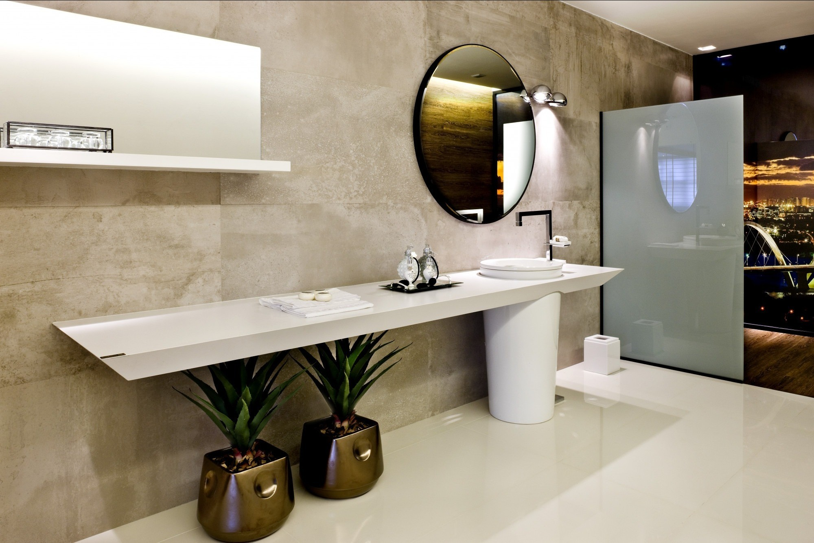
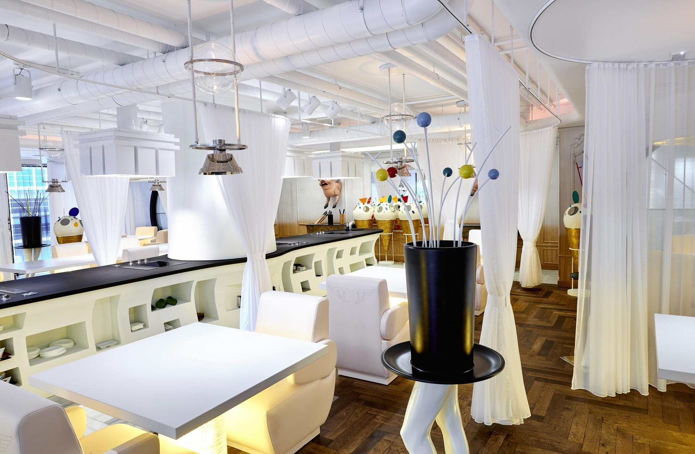

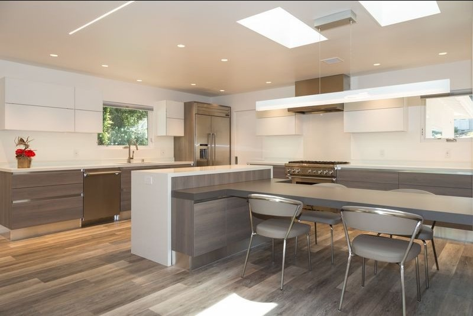
All slabs
All 13 Grain Classic slabs.
Each slab below uses the cleaned local image set. Send the GSV code when you need the most consistent repeat across multiple counters or rooms.
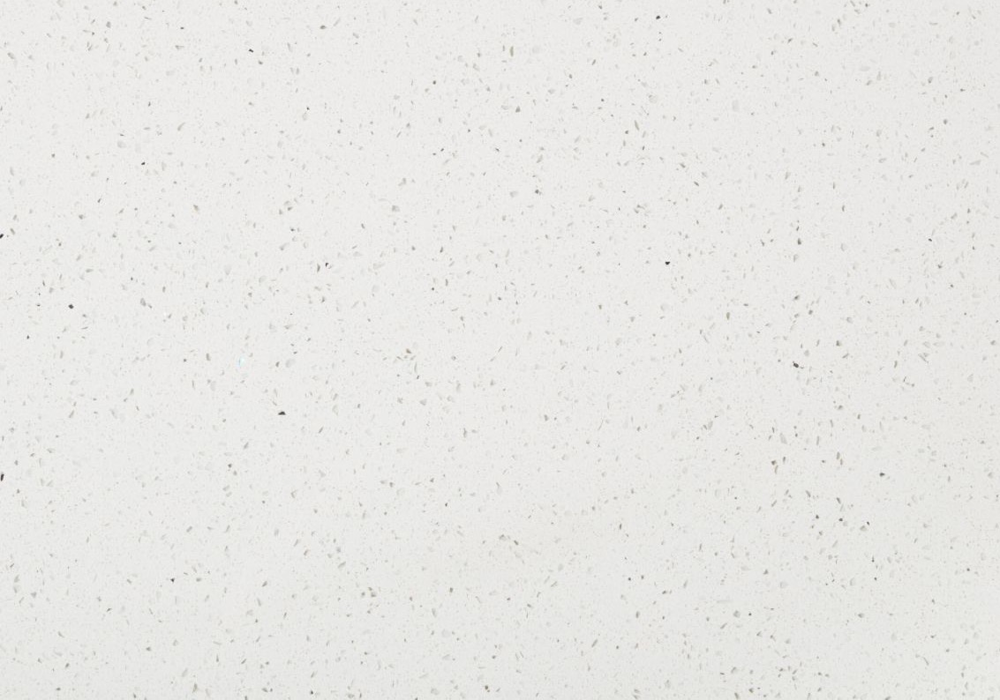
GSV-1204
Mirror White
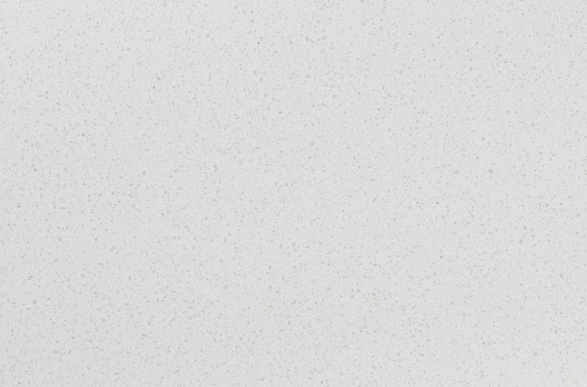
GSV-1301
Iced White
GSV-1102
Moon White
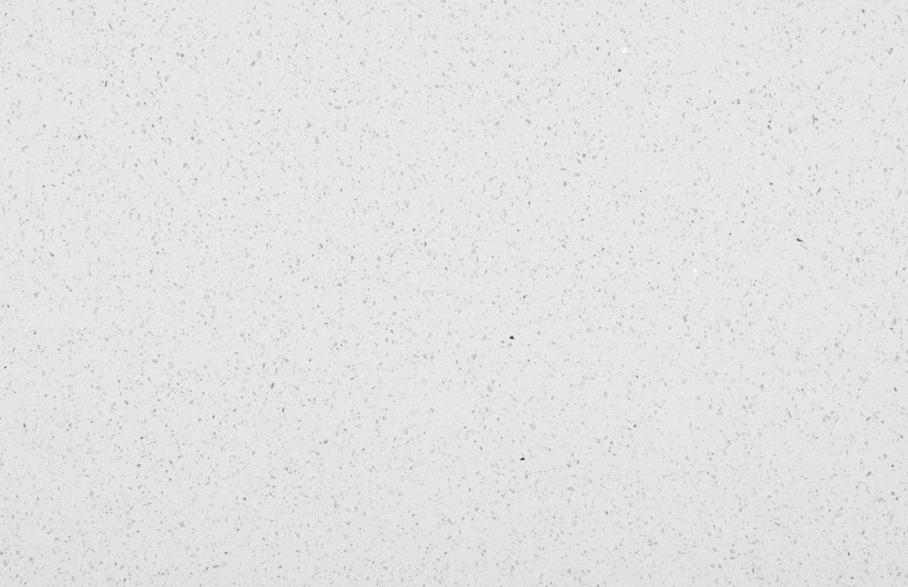
GSV-1201
Diamond White
GSV-1101
Pure White
GSV-1103
Super White
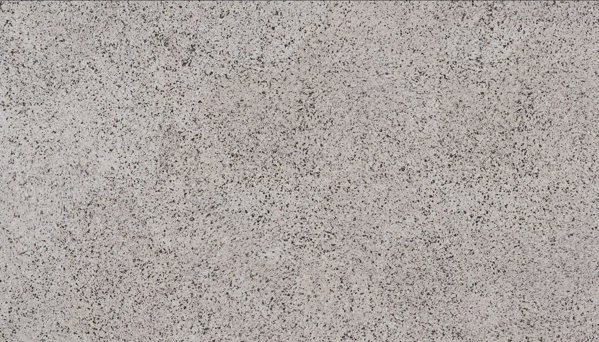
GSV-1303
Pepper White
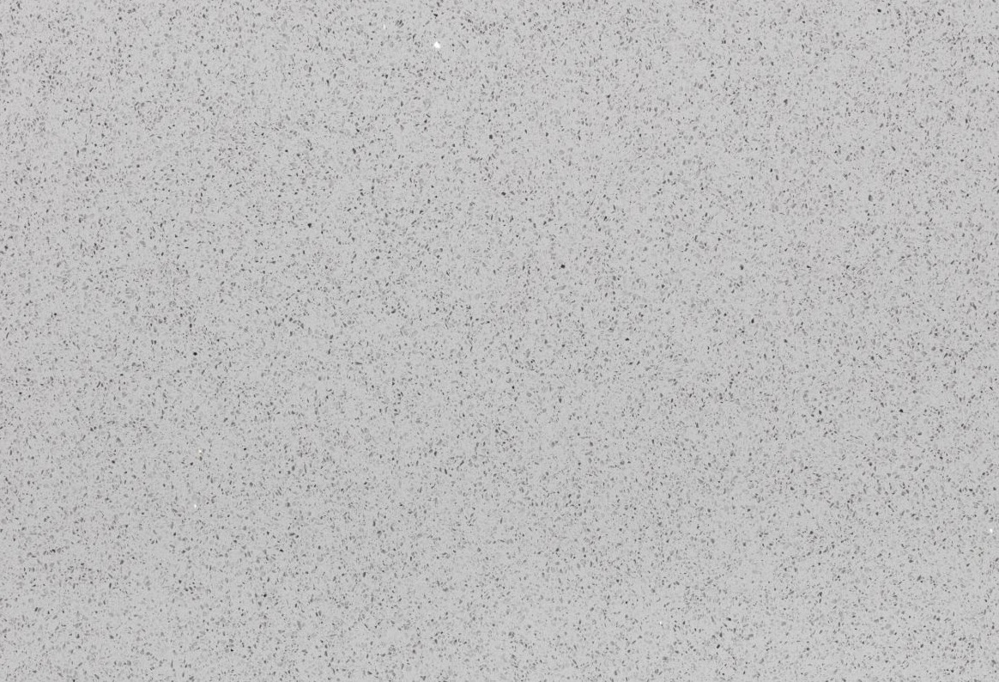
GSV-1203
Light Grey
GSV-1105
Cemento
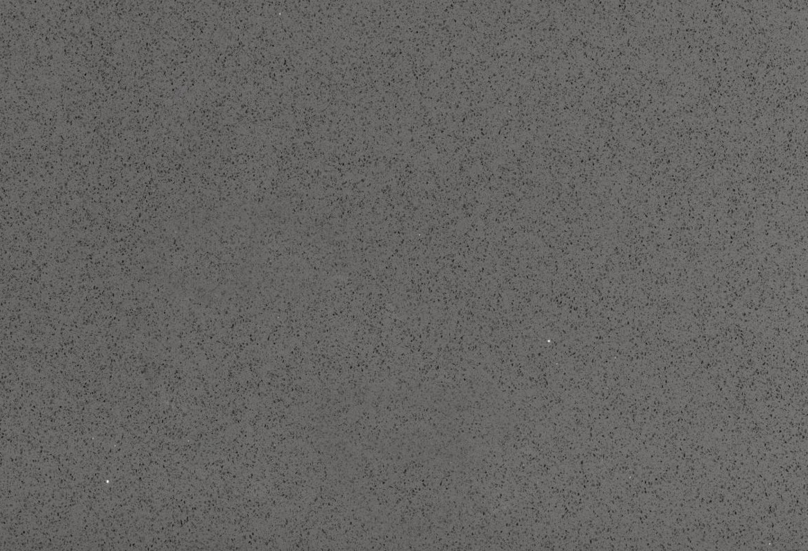
GSV-1205
Dark Grey Sparkle
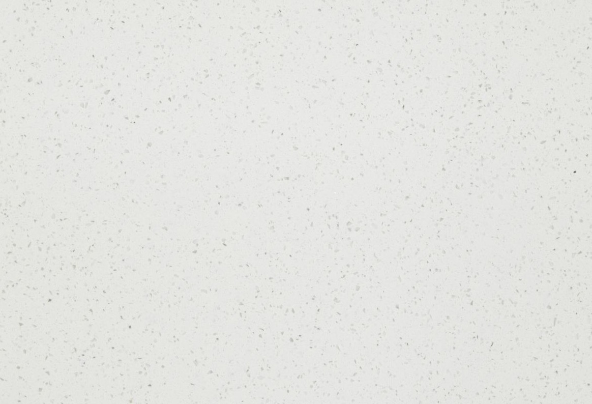
GSV-1202
White Sparkle
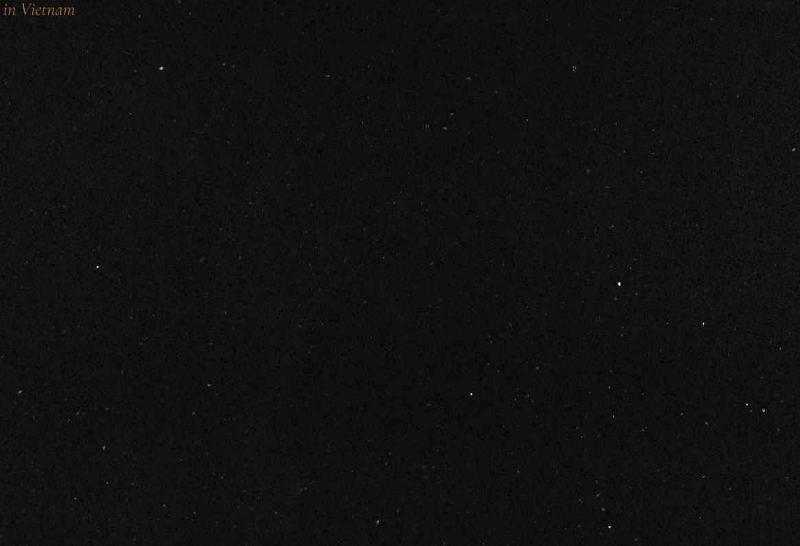
GSV-1206
Black Sparkle
GSV-1209
Blue Sparkle
Best fit
Projects that need more uniform slab behavior, lower visual movement, and easier repeatability across multiple spaces.
Use cases
Multi-unit kitchens, utility surfaces, service counters, and calmer rooms where consistency matters more than statement veining.
What to send
Send the slab name, square footage, edge profile, and sink or appliance cutout count to start a Grain quote.
Quartz Guides
Keep Grain selection clean and repeatable.
Use these guides if the project is focused on bright fields, lower visual movement, and a steadier spec path across many rooms.
Protect bright granular quartz with the right routine.
Start with the care guide so high-use surfaces stay consistent over time.
See when uniform slabs beat dramatic veining.
The design guide compares clean white, granular, concrete-like, and darker directions.
Confirm the project baseline.
Review sizing, NSF slabs, ISO 9001-managed factories, and design support.
Compare more countertop families.
Review the neighboring quartz families to confirm slab behavior before pricing.